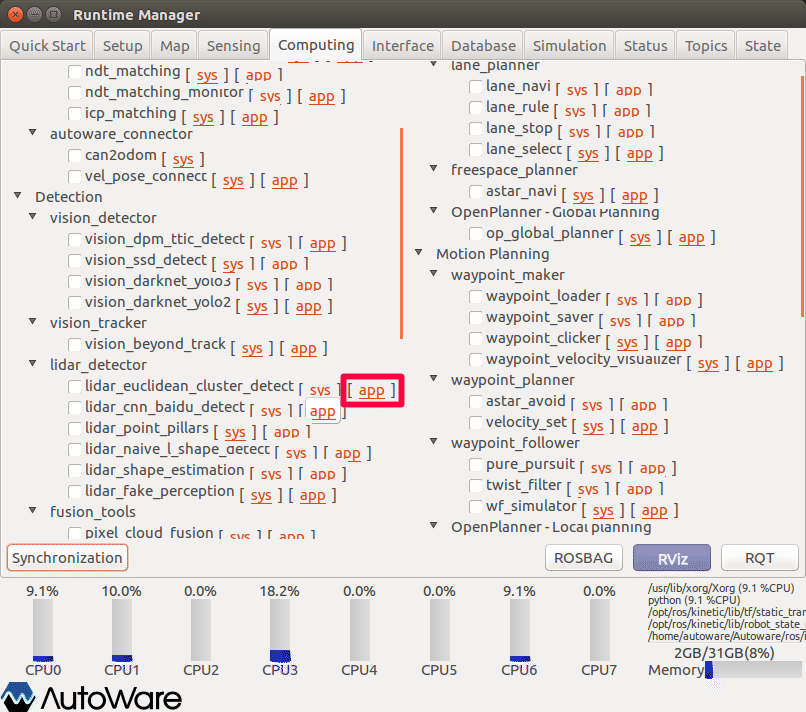
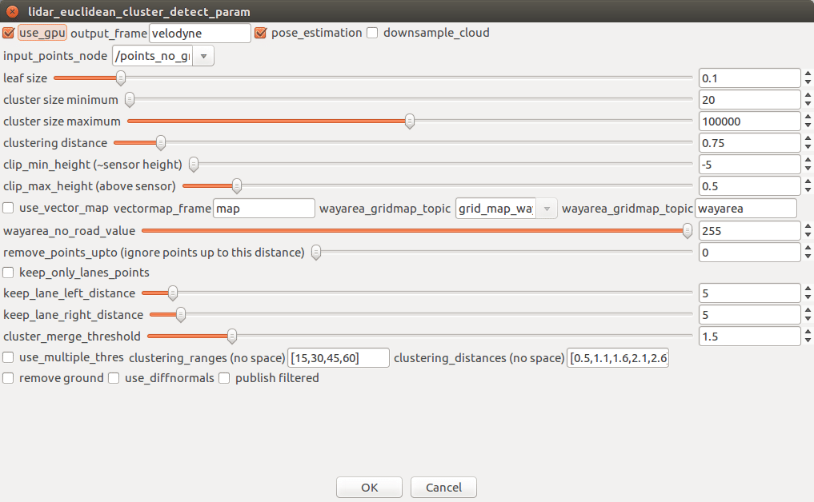
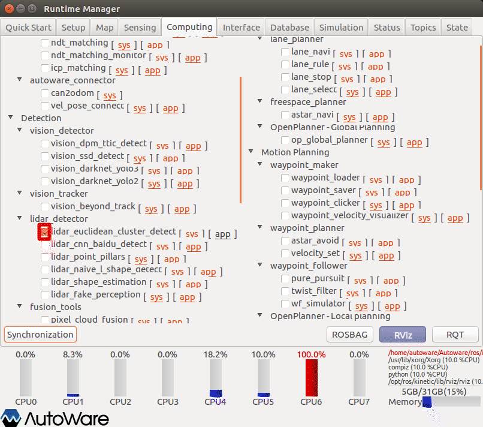
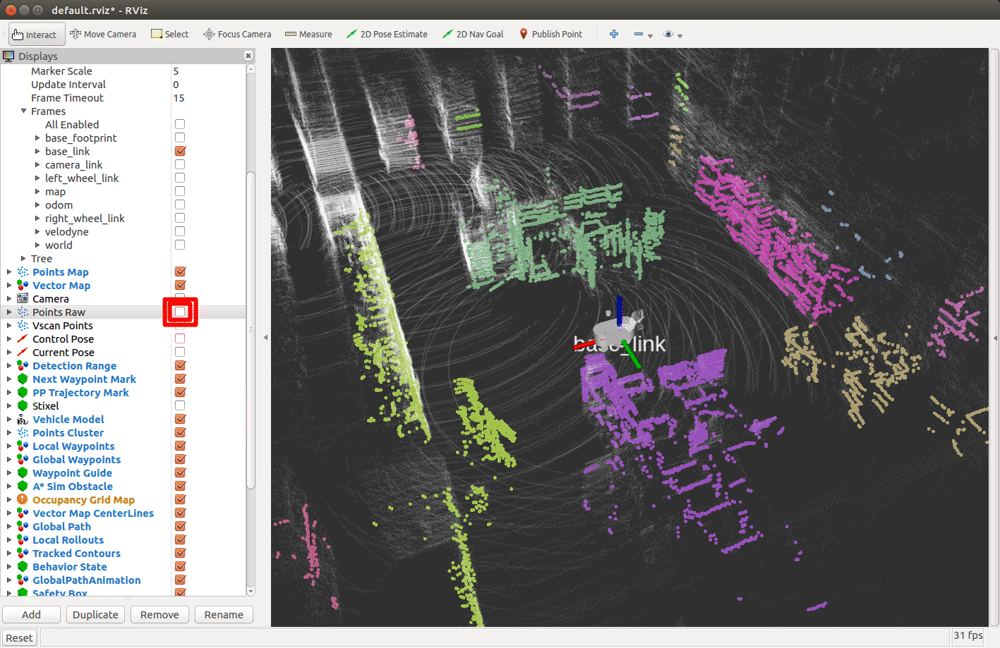

12.物体検出（点群からのクラスタリング）
点群を使った物体検出方法を以下に示す。
※設定詳細は、「Autoware 自動運転ソフトウェア入門」P121参照
事前準備
事前に以下の準備をしておくこと。
準備1
groundトピックの発行設定を行う。（以下いずれかをチェックする。）
内容については、10章参照のこと。

準備2
以下のいずれかを準備しておくこと。
- velodyne、SMAGVの起動
- ROSBAG再生の一時停止
点群クラスタの生成
レーザスキャン情報からクラスタを生成する。
lider_euclidean_cluster_detect項目の設定をする。

- Runtime Managerの［Computing］タブを選択。
- lider_euclidean_cluster_detect項目［app］押下でパラメタ設定画面を表示する。

- lider_euclidean_cluster_detectパラメタ項目を適宜設定する。
- ［OK］ボタン押下で前画面に戻る。
| # | 項目名 | 内容 | 単位 | smagv妥当値 |
|---|---|---|---|---|
| 1 | use_gpu | GPU使用 有無 | - | チェックあり |
| 2 | output_frame | フレーム名 | - | velodyne |
| 3 | pose_estimation | 姿勢推定の有無？ | - | チェックあり |
| 4 | map_size_x | ポイントデータの間引き 有無？ | - | チェックなし |
| 5 | input_points_node | Laser Scanトピック名 | - | /points_no_ground |
| 6 | Leaf Size | スキャンデータのダウンサンプリングサイズ。 | m | 0.1 |
| 7 | 調整中 |

- lider_euclidean_cluster_detect項目チェックBOXをチェックありにする。
RVizの設定
RViz起動後、defaultのRViz設定ファイルを開く。（~/Autoware/ros/src/.config/rviz/default.rviz）
そのままでは、Points_rawトピックとPoints_clusterトピックが同時に表示されており、判別しづらいのでPoints_rawトピックを非表示にする。

- クラスタリング表示がされていることを確認する。
点群に各クラスタを示す色が表示される。同じ色の部分が同じクラスタに属しており、1つの物体として検出される。
その他
- ROSBAG再生を一時停止している場合は、再生再開をする。
- 正しく表示しない場合、RVizの［Displays］ウィンドウ－［Global Options］－［Fixed Frame］を見直す。